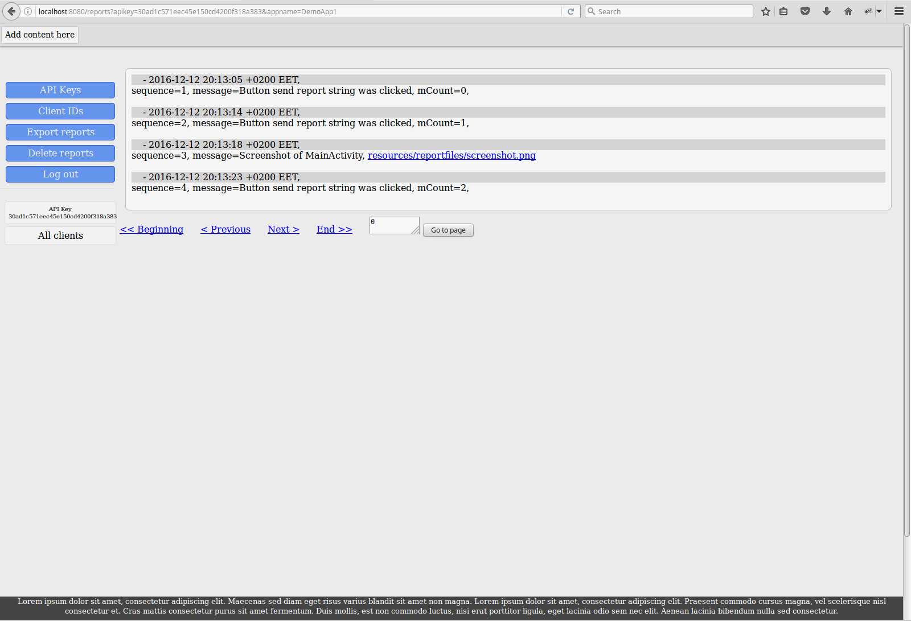

Description
Architecture
We use the API key to authenticate to the service. We have some code inplace, which would make it easy to switch to Token based authentication. Currently we have selected not to use it, since we don't want to have an initial call to get or refresh a Token. We want to make it easy to just send our report to the server at any moment without any preconditions. Although even if we decide to switch to Token authentication later, we can implement it in a way that the Stunt framework would ask and refresh the token whenever it is needed, without requiring the user to have a "register" call before any other report calls.
Database
We are currently using a SQLite database that is created in the current working directory of the application. Yes, yes we know. But is what is most convenient for development for us. If we are going to be using it with more than one or two user simultaneously this is not what we would want to use, since SQLite does not support concurent access. We could easily serialize the database access, but the users that are on the queue would ver quickly reach the point where their connectins will timeout often. But fear not. With one line of change we can use any other database. We intend to use it with Heroku's Postgre SQL:
database_stunt.go -> func DbInit:
db, err = sql.Open(DB_TYPE, DB_NAME) we should pass the database type and access URL.
How to use the Stunt
- In AndroidManifest.xml add two meta-data tags at the end of the application tag:
- Add Stunt source files or archive to you project.
- There is no registration needed, just use the appropriate “report” method.
<meta-data android:name="stunt_enabled" android:value="true"/> <meta-data android:name="stunt_api_key" android:value="your_api_key_from_the_stunt_portal"/>
Stunt web portal
- If you do not have an account create one by supplying an email and password on the registration page.
- Login using the email and password that you used to create an account.
- API Keys menu item - create an API key to be used in a client application.
- API Keys page
- Go to reports 
- Shows reports sent from clients using this API Key, by going to API Keys list and selecting ClientIds from the left menu to view the list of clients.
- Invite users to application. Share this API Key with other users, so that they can make changes to the application and see the reports sent from clients using this API keys.
- Delete API key
- Delete reports sent with API key
{kind=link}


{kind=link}

{kind=link}